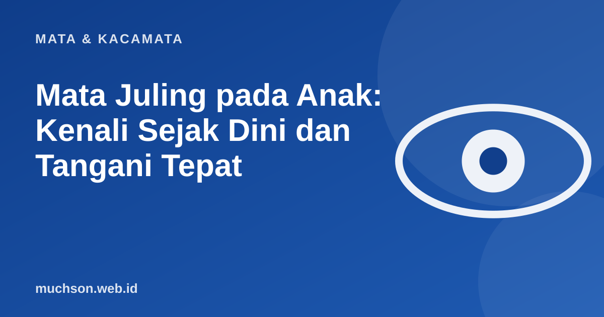

Beranda › Artikel › Mata & Kacamata
Mata & KacamataMata Juling pada Anak: Kenali Sejak Dini dan Tangani Tepat
Mata anak yang tampak tidak sejajar, satu melihat lurus dan satu melirik ke dalam atau ke luar, sering dianggap akan hilang sendiri seiring bertambah usia. Pada sebagian bayi yang sangat muda, sesekali tidak sejajar memang bisa normal. Tetapi juling yang menetap perlu diperiksa, karena bisa memicu mata malas yang sulit diperbaiki bila terlambat.

Apa itu juling (strabismus)?
Strabismus adalah kondisi ketika kedua mata tidak menatap ke arah yang sama. Satu mata bisa mengarah ke dalam (esotropia), ke luar (eksotropia), ke atas, atau ke bawah. Juling bisa terjadi terus-menerus atau hanya sesekali, misalnya saat anak lelah atau melamun.
| Jenis | Arah mata yang menyimpang |
|---|---|
| Esotropia | Ke arah dalam (ke hidung) |
| Eksotropia | Ke arah luar |
| Hipertropia | Ke atas |
| Hipotropia | Ke bawah |
Kaitannya dengan mata malas (ambliopia)
Otak anak masih belajar melihat. Bila kedua mata mengirim gambar yang berbeda karena tidak sejajar, otak bisa "mengabaikan" gambar dari mata yang menyimpang. Lama-kelamaan, penglihatan mata itu tidak berkembang optimal, disebut ambliopia atau mata malas. National Eye Institute di Amerika Serikat mencatat bahwa strabismus dan ambliopia bisa menjadi permanen bila tidak ditangani pada masa kanak-kanak.
Masa terbaik untuk menangani ambliopia adalah ketika anak masih kecil, saat sistem penglihatan masih berkembang. Semakin dini ditangani, umumnya semakin baik hasilnya.
Tanda yang perlu diwaspadai
Bayi baru lahir kadang tampak sesekali tidak sejajar pada bulan-bulan awal. Namun bila juling menetap atau terus terlihat setelah sekitar usia 4 bulan, atau muncul tiba-tiba pada anak yang lebih besar, segera periksakan ke dokter spesialis mata.
Pilihan penanganan
| Penanganan | Untuk apa |
|---|---|
| Kacamata | Mengoreksi minus, plus, atau silinder; pada sebagian jenis juling, kacamata saja bisa meluruskan mata |
| Penutup mata (patching) | Menutup mata yang lebih baik agar mata yang lemah terlatih |
| Tetes mata atropin | Alternatif patching pada kasus tertentu, membuat mata yang baik sementara buram |
| Latihan ortoptik | Pada jenis tertentu, untuk melatih koordinasi kedua mata |
| Operasi otot mata | Menyejajarkan posisi mata bila terapi lain tidak cukup |
Penanganan selalu disesuaikan dengan jenis juling, usia anak, dan ada tidaknya ambliopia. Kepatuhan memakai kacamata atau penutup mata di rumah sangat menentukan hasil.
Tips agar anak mau memakai kacamata atau penutup mata
- Pilih frame yang nyaman dan ringan, biarkan anak ikut memilih warna.
- Jadikan kebiasaan rutin, misalnya dipakai saat menggambar atau bermain.
- Puji usahanya, bukan hanya hasilnya.
- Beri tahu guru agar anak didukung di sekolah.
- Hubungi dokter bila anak terus menolak atau mengeluh tidak nyaman.
Tanya jawab
Apakah mata juling pada anak bisa hilang sendiri?
Apa hubungan juling dan mata malas?
Apakah juling harus dioperasi?
Kapan anak perlu periksa mata pertama kali?
Sumber dan bacaan lanjut
- National Eye Institute: data studi mata anak terbesar (strabismus dan ambliopia)
- WHO: World report on vision (2019)
- Memilih kacamata anak yang aman dan nyaman (artikel terkait)